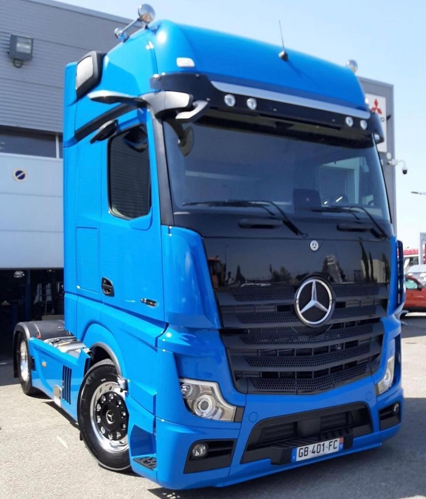
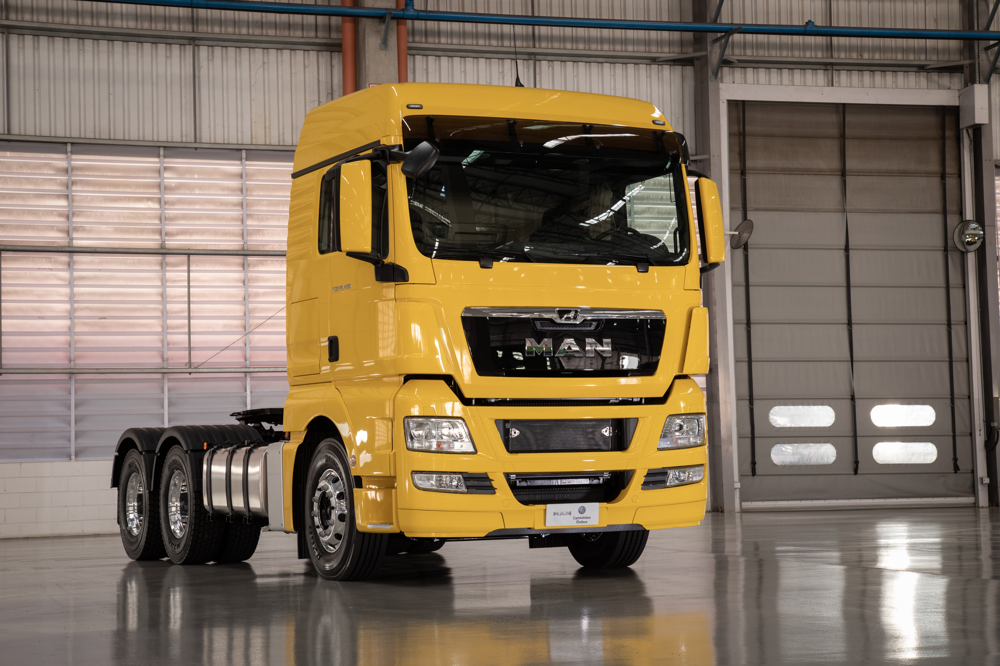

AUTORIDADE EM LINHA PESADA

Especialistas nas Maiores Marcas do Mercado
Conhecemos cada detalhe da sua máquina. Nossa equipe possui o conhecimento técnico, os equipamentos originais e a experiência necessária para extrair a máxima performance do seu caminhão, seja ele Volkswagen, Mercedes-Benz ou MAN.
Volkswagen

Mercedes-Benz

MAN TGX
.jpgmotor.jpg)